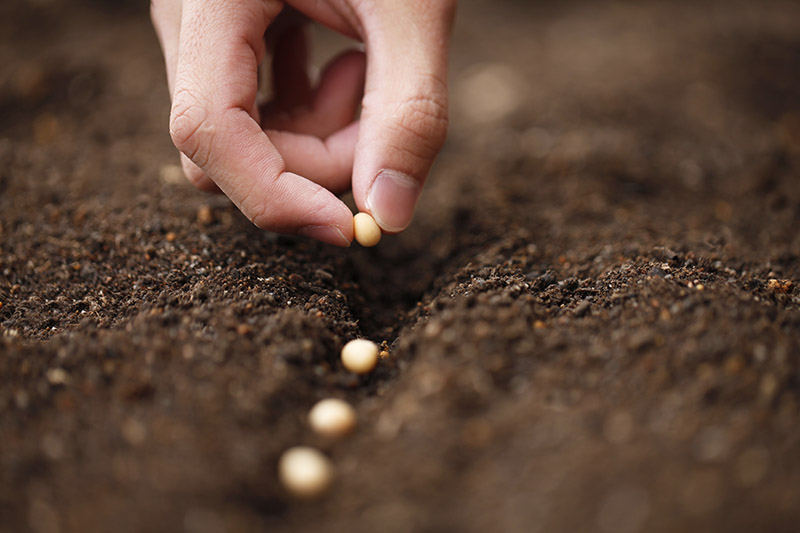
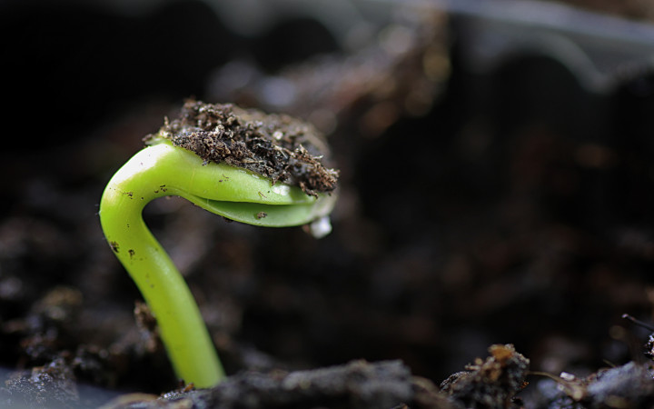
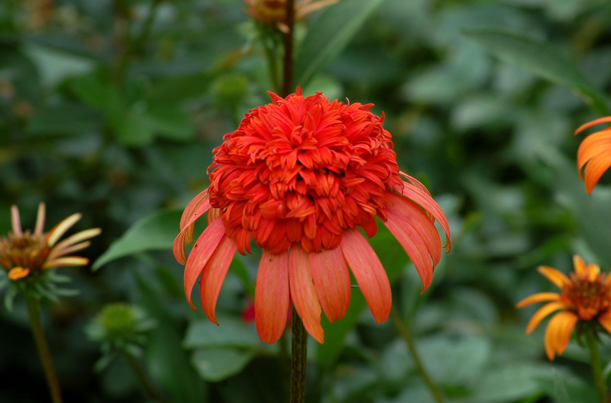

The Story of a Flower
By: Asma Al Murr
First, the seed is planted into soil.

Secondly, the sprout breaks through the soil, showing the stem of the flower.

Then, the bud begins to form, showing the color of the flower.

Lastly, the flower is in full bloom with bright and vibrant colors.
